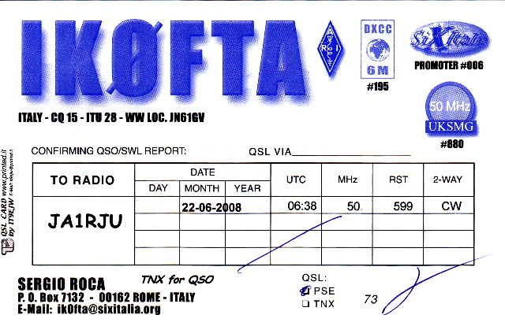
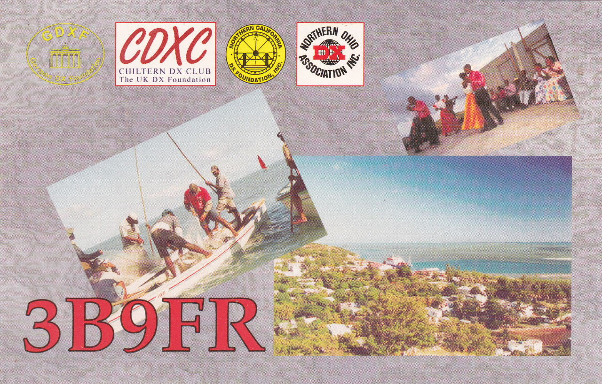
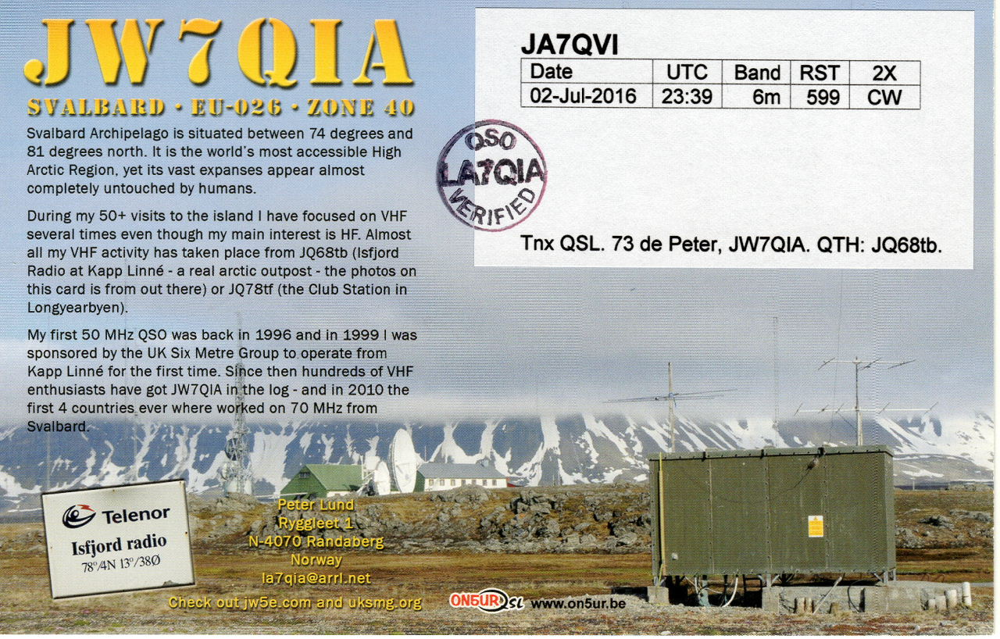

Flash ! DX

  

|
|
|
|
 
|
|
|
[Back Issues Sep.2016]
TIME:UTC(JST-09:00)
Report from JA1RJU(PM95sq)
30.Sep.2016(15:00b)
Report from JA1RJU(PM95sq)
29.Sep.2016(15:00b)
Report from JA1RJU(PM95sq)
28.Sep.2016(15:00b)
Report from JA1RJU(PM95sq)
27.Sep.2016(15:00b)
Report from JA1RJU(PM95sq)
26.Sep.2016(15:00c)
DU1EV/B 10:00- 50.007.9 CW Beacon
Report from JA1RJU(PM95sq)
24-25.Sep.2016(15:00b)
◎6SG=山形(東北6mグループ)のミーティング参加のためDX-Reportはお休みしました。
 2016年6SG-Meeting・山形 (詳細:Flash News参照) |
Report from JA1RJU(PM95sq)
23.Sep.2016(15:00c)
VK4BLK 06:31 50.276-0.258 WSJT JT65a CQ -22dB
VK4BLK 06:35 50.276-0.261 WSJT JT65a -16dB (QSO with JA2)
VK4BLK 06:43 50.276-0.261 WSJT JT65a CQ -25dB
DU1EV/B 08:40- 50.007.9 CW Beacon RST599++
DU7/PA0HIP 08:45 50.105 CW CQ
DU1EV/B 09:10- 50.007.9 CW Beacon RST599
Report from JA1RJU(PM95sq)
22.Sep.2016(15:00c)
N7ET/DU7 08:20 50.105 CW
DU1EV/B 08:20- 50.007.9 CW Beacon RST599++
N7ET/DU7 08:25 50.105 CW CQ CQ
Report from JA1RJU(PM95sq)
21.Sep.2016(15:00c)
DK7GG/DU6 08:02 50.276-0.476 WSJT JT65a CQ -07dB(PK10)
DK7GG/DU6 08:10 50.276 WSJT@ JT65a -05dB/-03dB (20W QSO)
DU1EV/B 08:20- 50.007.9 CW Beacon RST599++
DK7GG/DU6 08:35 50.276-0.046 WSJT JT65a CQ -03dB
|
◎関東直撃が心配された昨夜の台風16号は、東海地方を通過後に急速に衰退”熱帯低気圧”となり、東京都西部ではほとんど風の影響も無く消滅した。幸いに強風による被害は無かったものの、関東地方でも豪雨の影響で各地に大きな被害を与えた。
本土付近に”秋雨前線”が停滞しているため、今日は台風一過の晴天とはならず、肌寒い曇天となっている。 夕方からWSJTで入感していたDK7GG/DU6は、一昨日に続いて強力。 |
Report from JA1RJU(PM95sq) 20.Sep.2016(15:00c)
| ◎今年に入って6個目の日本上陸となった台風16号は、九州・鹿児島の大隅半島に上陸した後、四国沖を通過、和歌山県に再上陸、北上を続けている。東海地方を通過後、深夜には関東・甲信地方に最接近となる予想。九州、四国、関東までの広い範囲に豪雨の被害をもたらしている台風16号だが、”強風域”の広い台風に備え、われわれは"アンテナを降ろし"無事な通過を祈るだけ。 |
Report from JA1RJU(PM95sq)
19.Sep.2016(15:00c)
DU7/PA0HIP 07:55 50.105 CW
DK7GG/DU6 08:27 50.276-0.350 WSJT JT65a CQ -11dB
DK7GG/DU6 08:37 50.276+0.390 WSJT JT65a -19dB (QSO with JA4)
DU1EV/B 08:45- 50.007.9 CW Beacon RST599
DK7GG/DU6 08:49 50.276+0.022 WSJT JT65a -14dB (QSO with JA3)
DK7GG/DU6 09:09 50.276+0.374 WSJT JT65a -08dB (QSO with JA3)
Report from JA1RJU(PM95sq)
18.Sep.2016(15:00b)
Report from JA1RJU(PM95sq)
17.Sep.2016(15:00b)
Report from JA1RJU(PM95sq)
16.Sep.2016(15:00d)
VK4BLK 07:06 50.276-0.261 WSJT JT65a CQ -16dB
VK4BLK 07:17- 50.276 WSJT@ JT65a -05dB/-01dB (10W QSO)
VK4BLK 07:35 50.276-0.250 WSJT JT65a CQ -03dB
VK4WTN 07:53 50.276-0.127 WSJT JT65a CQ -11dB (100W 7EL)
VK4WTN 08:05 50.275.990 WSJT@ JT65a -09dB/-19dB (20W QSO)
DU1EV/B 09:00- 50.007.9 CW Beacon RST599
Report from JA1RJU(PM95sq)
15.Sep.2016(15:00b)

 7/3の朝にJAから初QSOに成功したJW7QIA(QSL提供＝JA7QVI) |
Report from JA1RJU(PM95sq)
14.Sep.2016(15:00b)
Report from JA1RJU(PM95sq)
13.Sep.2016(15:00c)
DU1EV/B 07:30- 50.007.9 CW Beacon RST599
DU7/PA0HIP 07:50 50.105 CW RST 599++
6L0NJ/B 09:10- 50.051 CW Beacon
(JA6YBR/b 09:10- 50.017 CW Beacon Miyazaki)
Report from JA1RJU(PM95sq)
12.Sep.2016(15:00c)
VK6RSX/b 09:20- 50.304 CW Beacon QSB
Report from JA1RJU(PM95sq)
11.Sep.2016(15:00c)
6L0NJ/B 09:20- 50.051 CW Beacon
Report from JA1RJU(PM95sq)
10.Sep.2016(15:00c)
VK6RSX/b 09:30- 50.304 CW Beacon RST579 QSB
|
◎連続して日本列島に豪雨の被害をもたらしていた台風も一段落、関東地方も蒸し暑い天候が戻ってきたが、秋雨前線の影響で来週は天候は安定しない。 6mのコンデションはEsシーズンも低下、秋型に向かいつつある。今日は夕方からVK6RSX(OG89)のBeaconが強力に入感していた。いよいよ本格的にVKの入感のシーズンを迎える。 |
Report from JA1RJU(PM95sq) 09.Sep.2016(15:00b) Report from JA1RJU(PM95sq) 08.Sep.2016(15:00b) Report from JA1RJU(PM95sq) 07.Sep.2016(15:00b) Report from JA1RJU(PM95sq) 06.Sep.2016(15:00b) Report from JA1RJU(PM95sq) 05.Sep.2016(15:00b) Report from JA1RJU(PM95sq) 04.Sep.2016(15:00b) Report from JA1RJU(PM95sq) 03.Sep.2016(15:00b) Report from JA1RJU(PM95sq) 02.Sep.2016(15:00b) Report from JA1RJU(PM95sq) 01.Sep.2016(15:00b)